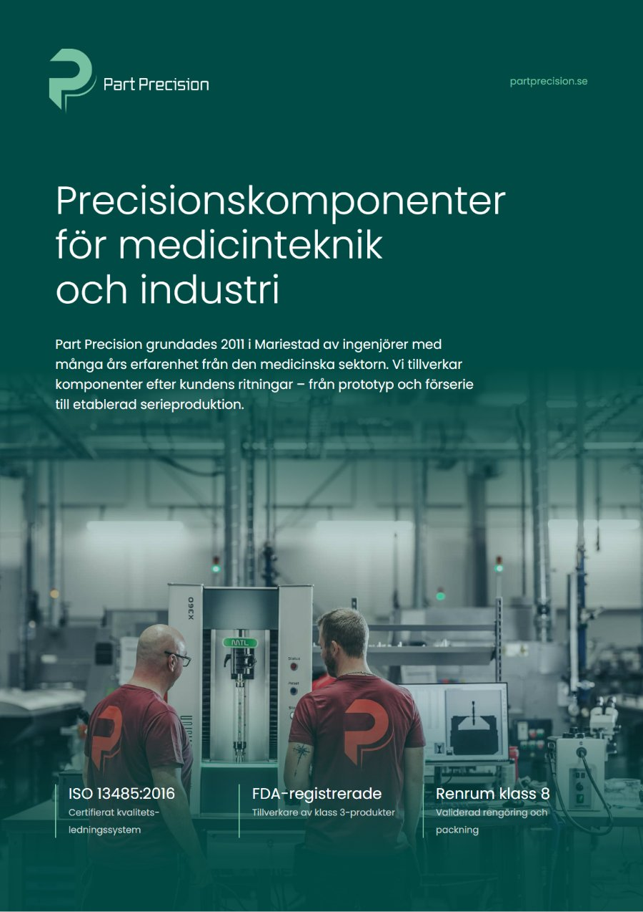
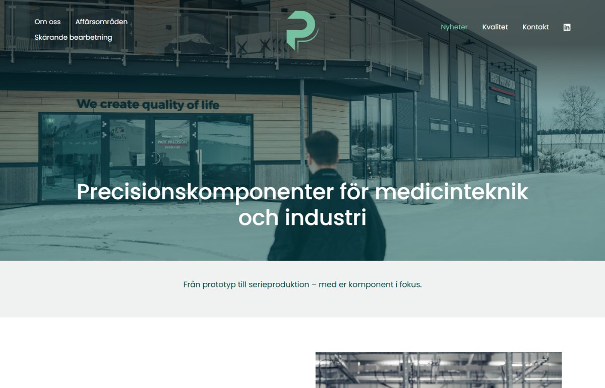

Det här ingår
Fyra delar som hänger ihop: designsystemet ger allt ett gemensamt utseende, broschyrer berättar vilka ni är, landningssidor och LinkedIn-inlägg ser till att budskapet når rätt mottagare. Nedan visar vi ett exempel på varje.
Färger
- Mörkgrön
#004B45 - Mintgrön
#76C1A0 - Ljus neutral
#F0F2F1 - Grågrön
#CBD6D6 - Vit
#FFFFFF - Grå
#707070 - Röd
#E02128 - Mörkröd
#70150F
Typografi
Komponenter
Designsystem
Ett designsystem byggt på ert varumärke
Vi samlar färger, typsnitt och komponenter från partprecision.se i ett gemensamt designsystem. Det är grunden för allt material i förslaget – och för det ni tar fram framöver, i tryck och digitalt.
Ingår
- Färgpalett med åtta färger från er webbplats
- Typografi i Poppins med rubrik- och brödtextnivåer
- Komponenter som knappar, etiketter, kort och färgband
- Färdiga designvariabler för webben

Broschyr
En broschyr som säljer er tillverkning
Fyra A4-sidor som presenterar tillverkningen, affärsområdena och certifieringarna – med en namngiven kontaktperson som nästa steg för nya kunder.
Ingår
- Digital PDF med klickbara länkar för mejl, hemsida och LinkedIn
- Tryckfärdigt original med utfall och skärmärken
- Redigerbar Word-version för egna uppdateringar

Landningssida
En landningssida på partprecision.se
En landningssida dit inlägg, mejl och annonser kan länka. Den presenterar broschyren och leder besökaren vidare till kontakt – byggd med webbplatsens egna rubriker, färger och knappar.
Ingår
- Text för landningssidan
- Layout i webbplatsens befintliga stil
- Anvisning för publicering på er webbplats
Ett inlägg som sprider broschyren
Broschyren publiceras som ett bläddringsbart dokument i flödet, så att kunder och nätverk kan läsa den direkt i LinkedIn.
”Söker ni en tillverkningspartner inom precisionsmekanik eller medicinteknik?”
Ingår
- Inläggstext med hashtaggar
- Kvadratisk bild för flödet, 1200 × 1200 px
- Anvisning för dokument- eller bildinlägg